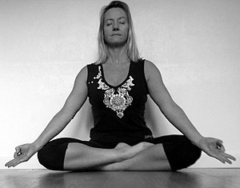
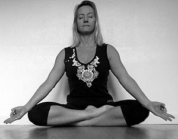

left-right symmetric



source: Yoga Journal
| Current pose: seated forward fold with straight legs | Adjacent poses: corpse pose | one leg straight, one leg in | squat, knees wide OR garland | half lotus OR accomplished | floating staff pose | |
|
paschimatanasana left-right symmetric |
 |